N03 · Map tile and site inspection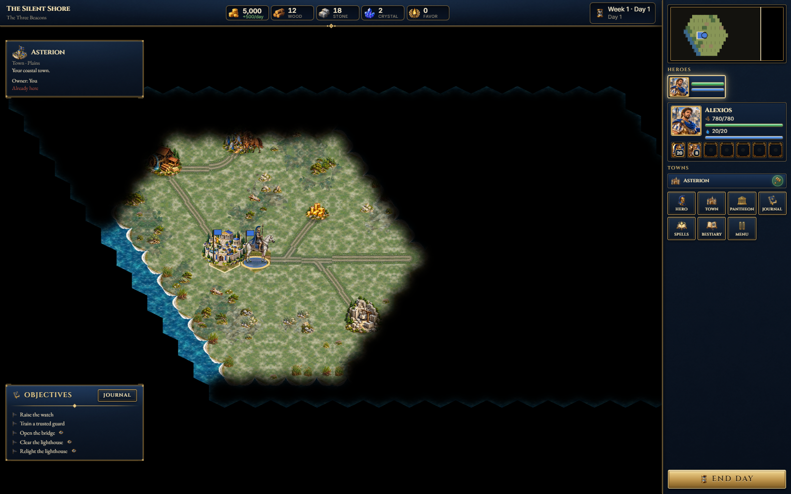
S01 · Main menu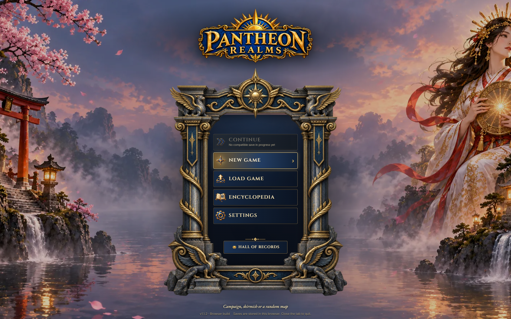
S02 · New game modes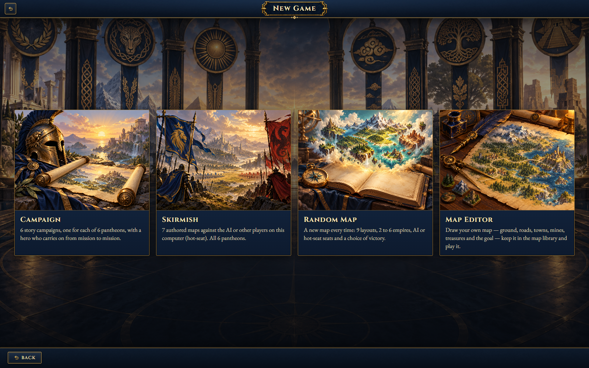
S03A · Campaign selection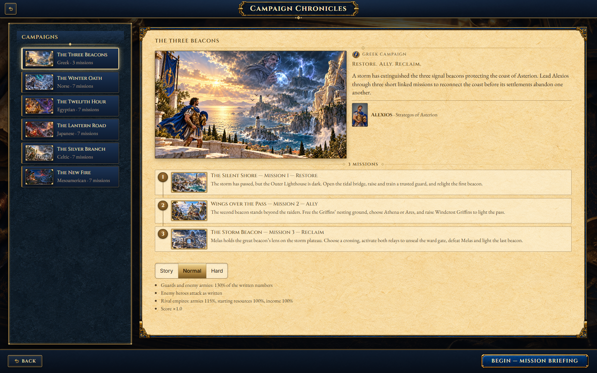
S03B · Skirmish map selection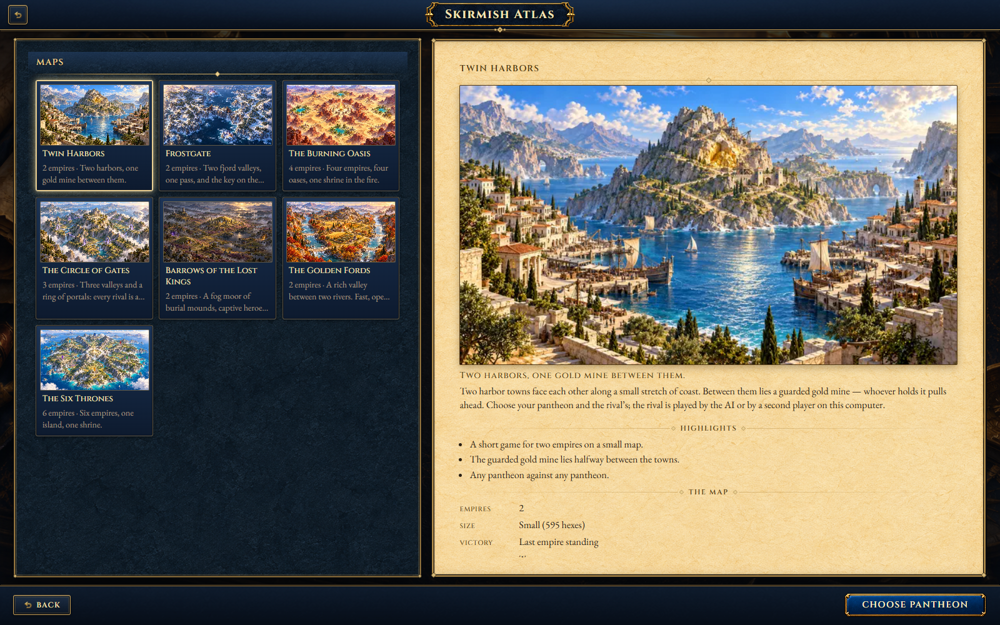
S04 · Pantheon and match setup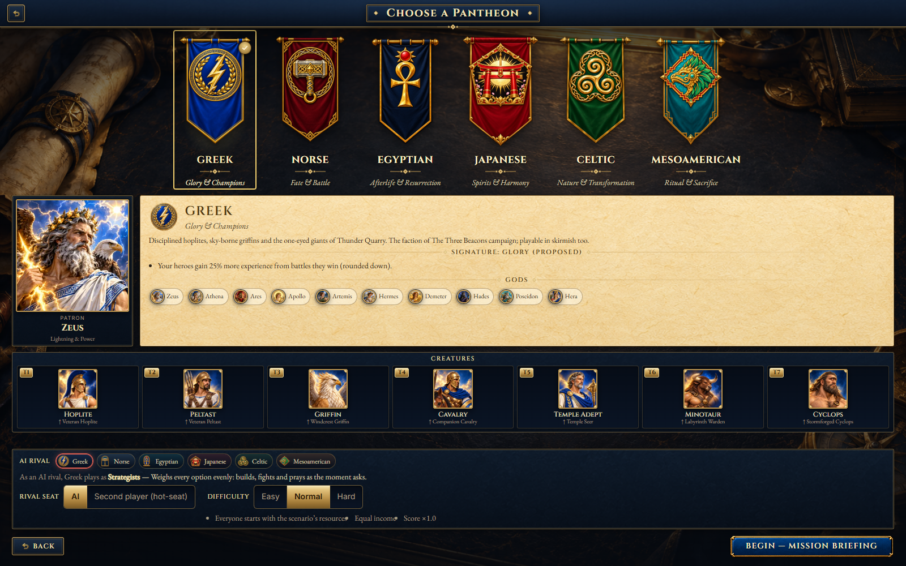
S06 · Adventure map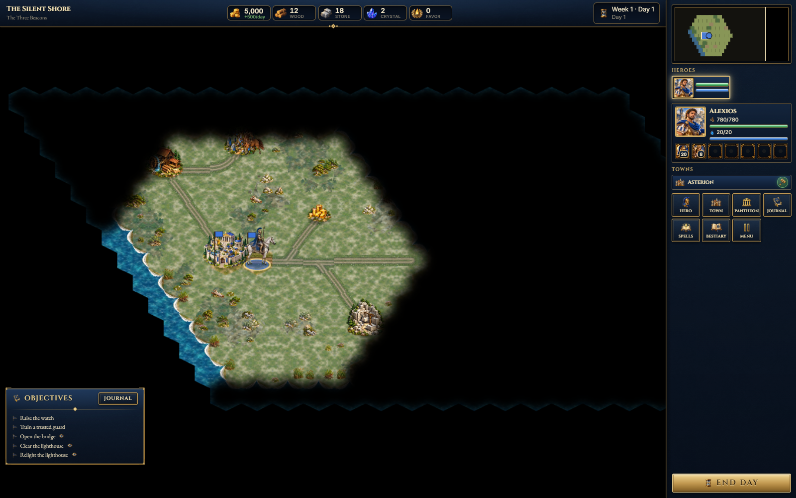
S07 · Hero and equipment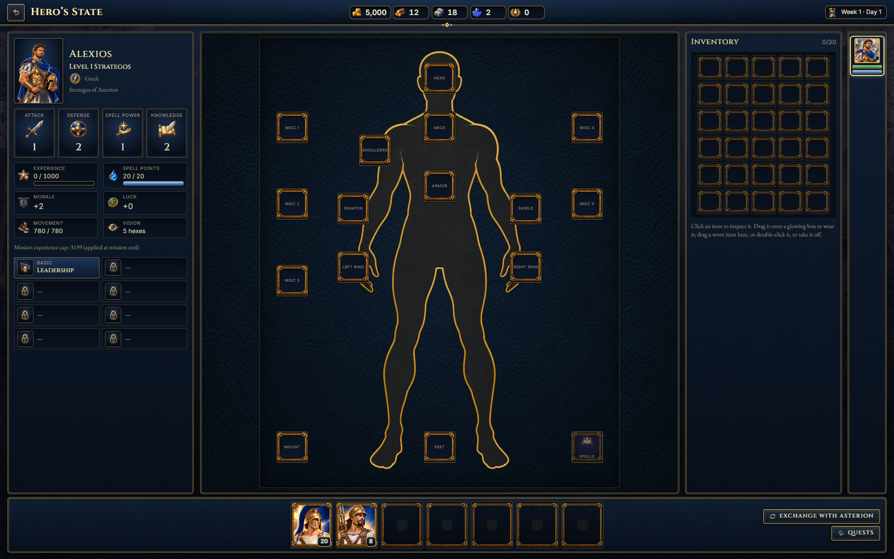
S08 · Town management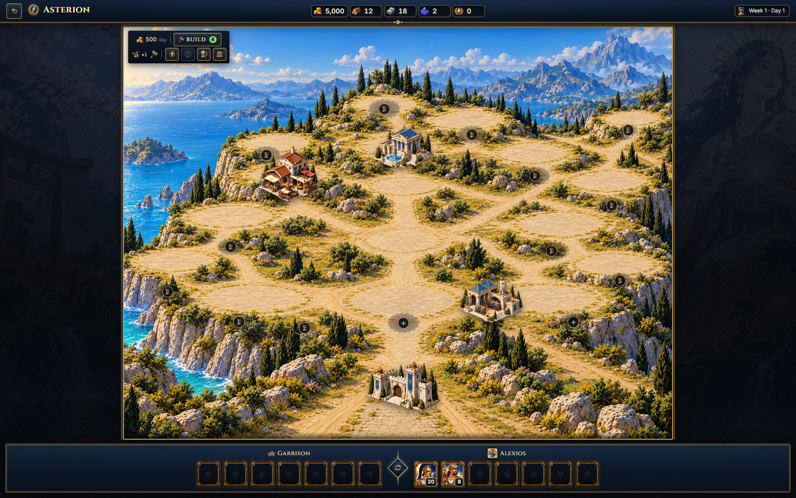
S08B · Developed town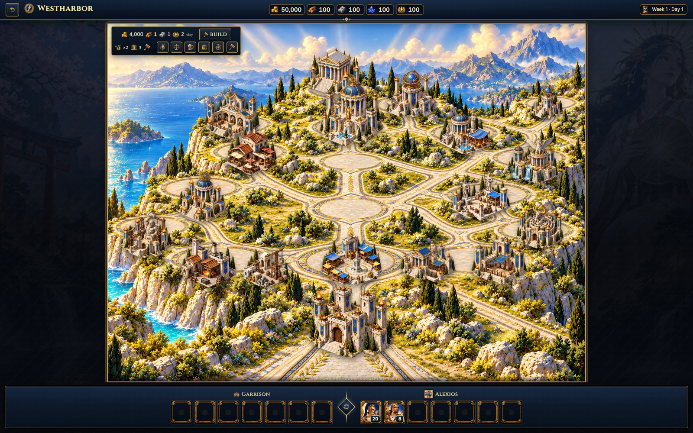
S09 · Recruitment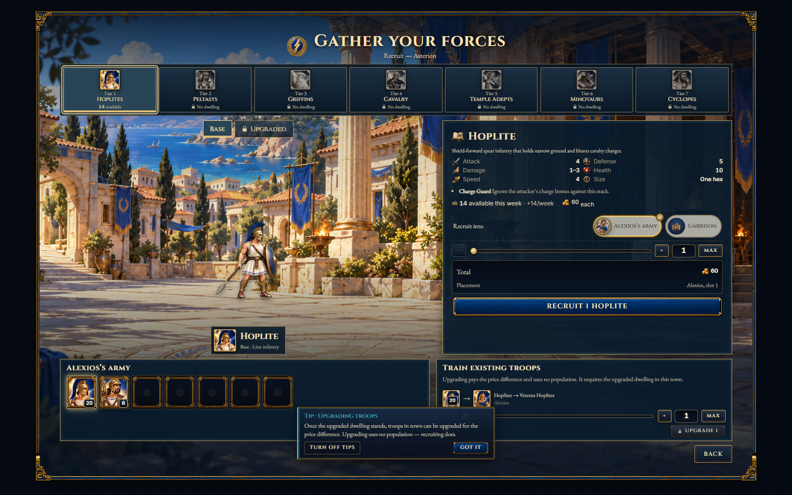
S10 · Pantheon and gods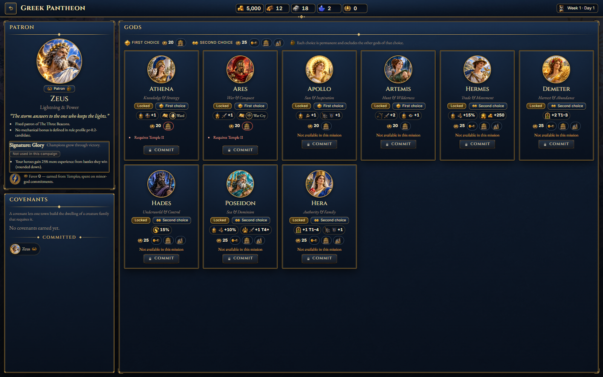